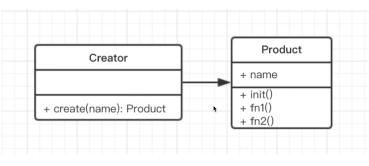

工厂模式
一般涉及到new 操作符 创建对象需要大量重复的代码 客户端不依赖产品类实例如何被创建、实现等细节
1.js实现方法
UML类图

实现代码
class Prodect{
constructor(name){
this.name = name
}
init(){
console.log('init')
}
fn(){
console.log('fn')
}
}
class Create{
create(name){
return new Prodect(name)
}
}
//test
let factory = new Create();
let p = factory.create('a')
console.log(p.name)
p.init()
p.fn()
场景实现
- jQuery $("div")
class jQuery{
constructor(selector){
let slice = Array.prototype.slice
let dom = slice.call(document.querySelectorAll(selector)) //将多个dom节点转化为数组
let len = dom ?dom.length :0
for(let i =0;i<len;i++){
this[i] = dom[i]
}
this.length = len
this.selector = selector || ''
}
append(node){
}
addClass(name){
}
html(data){
}
//此处省略n个api
}
window.$ = function(selector){
return new jQuery(selector)
}
2.React.createElement
class Vnode(tag,attrs,children{
}
React.createElement = function(tag,attrs,children){
return new Vnode(tag,attrs,children)
}
//使用
React.createElement('div','data',null)
2.java实现方法
代码
//Video.class
public abstract class Video {
public abstract void produce();
}
//JavaVideo
public class JavaVideo extends Video{
@Override
public void produce() {
System.out.print("JavaVideo");
}
}
// VideoFactory
public abstract class VideoFactory {
public abstract Video getVideo();
}
// JavaVideoFactory
public class JavaVideoFactory extends VideoFactory{
@Override
public Video getVideo() {
return new JavaVideo();
}
}
// Test
public class Test {
public static void main(String[] args) {
VideoFactory videoFactory = new JavaVideoFactory();
Video video = videoFactory.getVideo();
video.produce();
}
}